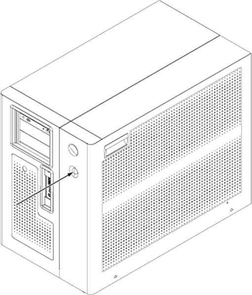
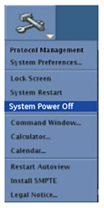
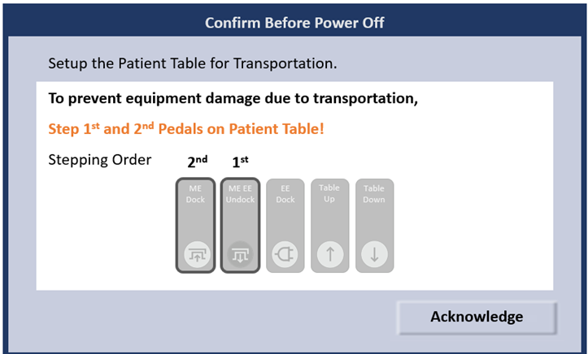
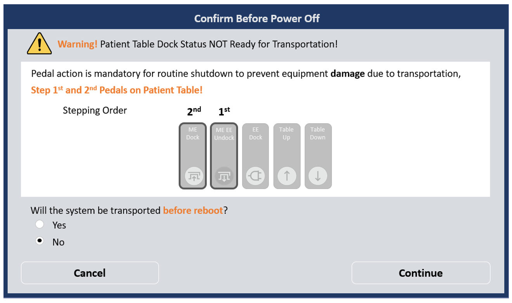

Shutting down the host computer shuts down the system safely and turns off the power to the host computer.
Topic ID: task_vc3_kj5_pfc
Shutting down the host computer or powering down the MR system
About this task
This procedure describes how to shut down the host computer or put the system into a power save mode (if applicable).
Note This procedure does not describe how to shut down the system for servicing. Please refer to the applicable LOTO procedures under Safety and General Information.
Systems that have a power save mode have a power button on the Global Operator Cabinet (GOC).Figure 1. Cabinet power button

To protect the table and dock assembly, mobile systems with a dockable table should be transported with the table mechanically but not electrically docked. Software version 30.0 and later will not allow a mobile system to be shut down unless the table is mechanically but not electrically docked. The gesvc EA3 user account can shut down the system for service purposes with the table completely undocked.
Procedure
(For mobile systems with a dockable table) Press the table undock pedal and then the table mechanical dock pedal. Do not press the electrical dock pedal.
Click the arrow on the Tools High Level Access tab and click System Shutdown or System Power Off (as applicable).
Figure 2. System Power Off

(For mobile systems with a dockable table and software versions prior to 30.0_R01) A window will show the steps to be taken for the table before the system is shut down. Click Acknowledge to continue.
Figure 3. Confirm Before Power Off window

(For mobile systems with a dockable table and software versions 30.0_R01 and later) If the table is not in the proper configuration, a window will show with required table pedal actions. The window will clear when the table is mechanically but not electrically docked.
Note To shut down the system for service with the table completely undocked, the gesvc user can select the No radio button for Will the system be transported before reboot? and then click Continue.Figure 4. Confirm Before Power Off window - required table pedal actions

When prompted, click on the reason for the system shutdown: Daily, Service, or Other. Or click Cancel to exit the shutdown of your system.
The application begins to shut down, which can take up to 15 minutes.
When the shut down is completed, the screen goes blank and the computer turns off.